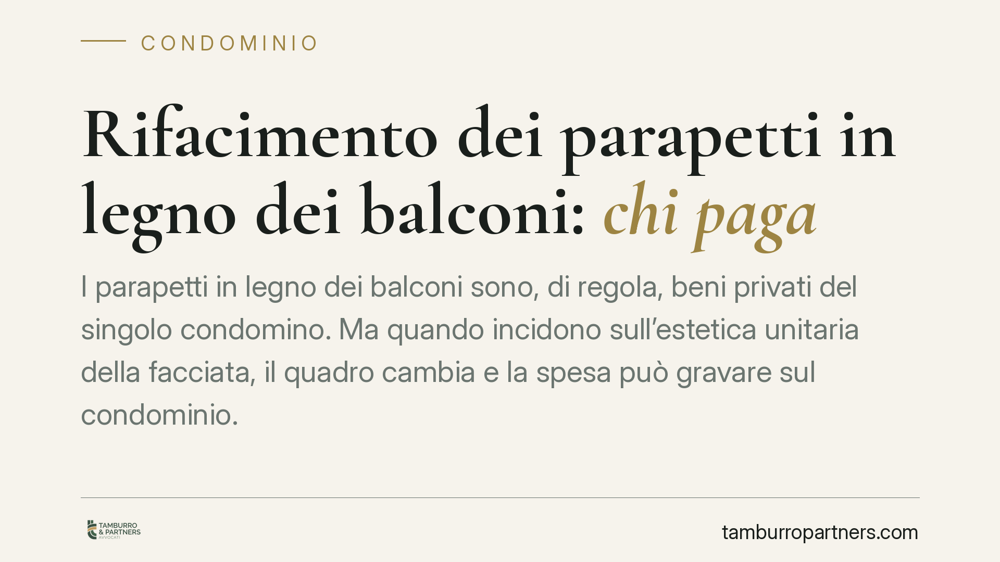

Rifacimento dei parapetti in legno dei balconi: chi paga
I parapetti in legno dei balconi sono, di regola, beni privati del singolo condomino. Ma quando incidono sull'estetica unitaria della facciata, il quadro cambia e la spesa può gravare sul condominio. La distinzione non dipende dal materiale, ma dalla funzione dell'elemento. Comprenderla è decisivo per impostare correttamente il riparto ed evitare delibere impugnabili.

Il punto di partenza: il balcone non è parte comune
Il balcone aggettante, cioè quello che sporge dalla facciata come prolungamento del solaio, non rientra tra le parti comuni elencate dall'art. 1117 c.c. Serve in via esclusiva all'unità immobiliare cui accede. Ne consegue che le opere di manutenzione della parte propria del balcone competono, in linea di principio, al proprietario dell'appartamento.
Questo vale anche per i parapetti in legno: la ringhiera, il corrimano e le doghe che delimitano il balcone sono, in prima battuta, elementi al servizio del singolo. Se il degrado del legno riguarda la funzione di protezione e di godimento del balcone, la spesa di sostituzione è del proprietario.
La distinzione che conta: funzione privata o decoro architettonico
La questione si complica quando l'elemento assolve anche a una funzione estetica. Secondo l'orientamento consolidato della Cassazione in materia di decoro architettonico dei balconi, i rivestimenti, i frontalini e gli elementi decorativi che concorrono a formare l'aspetto unitario della facciata sono soggetti a un regime diverso: essendo destinati a servire l'intero edificio sul piano estetico, la relativa spesa può ricadere sul condominio.
Il discrimine, dunque, non è il materiale ma la funzione. Un parapetto in legno può essere un mero manufatto privato oppure un elemento che, per uniformità di essenza, colore e disegno, caratterizza l'intero prospetto. Nel primo caso paga il singolo; nel secondo, se l'intervento serve a preservare l'omogeneità estetica dell'edificio, la spesa può essere ripartita tra i condomini.
È un accertamento di fatto. Un parapetto ligneo isolato, diverso dagli altri, resta un problema del proprietario. Un sistema di parapetti in legno identici su tutti i balconi, la cui sostituzione parziale genererebbe disomogeneità cromatica o di finitura, tende invece ad assumere rilievo condominiale.
Il ruolo del regolamento condominiale
Un passaggio spesso trascurato è il regolamento condominiale. Quando ha natura contrattuale — cioè è stato accettato da tutti i condomini o richiamato negli atti d'acquisto — può derogare ai criteri legali di ripartizione della spesa e attribuire in modo espresso la manutenzione di determinati elementi (compresi parapetti e ringhiere) al condominio o al singolo.
In presenza di una clausola di questo tipo, prevale la disciplina pattizia. Prima di discutere l'imputazione della spesa in assemblea, occorre quindi leggere il regolamento e verificarne la natura.
Cosa cambia in assemblea: il regime di invalidità della delibera
Se l'assemblea approva un riparto che imputa la spesa in violazione dei criteri applicabili, la delibera non è nulla ma, di regola, annullabile ai sensi dell'art. 1137 c.c.. Il condomino dissenziente o assente deve impugnarla entro trenta giorni (dalla deliberazione, se presente; dalla comunicazione del verbale, se assente).
La nullità resta confinata ai casi più gravi: violazione di diritti individuali o di criteri inderogabili. La distinzione è pratica: chi non impugna nel termine breve resta vincolato al riparto, anche se errato.
Cosa fare in concreto
- Verificare il regolamento condominiale e accertarne la natura: se contrattuale, la clausola sulla manutenzione di parapetti e ringhiere prevale sui criteri legali.
- Documentare lo stato dei parapetti in legno con rilievo fotografico e, ove utile, relazione tecnica, per stabilire se il degrado incide solo sulla funzione privata o sull'uniformità estetica della facciata.
- Distinguere in bilancio e in delibera le opere di competenza del singolo da quelle di rilievo condominiale, motivando il criterio adottato.
- Impugnare entro trenta giorni ex art. 1137 c.c. la delibera di riparto ritenuta viziata: il termine è perentorio.
- Nei casi dubbi, in particolare per interventi onerosi sull'intera facciata, è opportuna una valutazione tecnico-legale preventiva rispetto all'assemblea.
La gestione corretta di questi interventi passa da un'istruttoria ordinata: prima la qualificazione dell'elemento (privato o di decoro), poi la verifica del regolamento, infine l'impostazione del riparto. È l'ordine che riduce il contenzioso.
---
Contributo informativo a cura di Tamburro & Partners Avvocati. Non costituisce parere legale.
Ogni condominio ha una storia a sé.
Se gestisci un'amministrazione e vuoi un confronto su una specifica questione condominiale, scrivi allo studio. Ti rispondiamo entro un giorno lavorativo.